准确定位一张卡券，
按角色授权执行作废。
独立操作页通过卡券模板ID＋核销码确认实例，并保留手机号/VIN校验及处理反馈。角色页展示新增功能授权及有无权限的交互差异。以下材料区分用户要求、现有证据与演示建议。
静态交互原型全部数据虚构可离线打开手机号 / VIN + 模板 + 核销码
模板ID＋核销码唯一，条件错误即阻断
只改变选定的一张实例
成功、失败与未知分别反馈
打开交互原型 →待确认与验收边界见本页
研发实现、接口联调、真实授权、生产发布与正式业务验收未执行。浏览器验证只证明本地虚构场景。
卡券实例作废及角色权限 · 需求说明 V1.2
需求ID：DFN-REQ-20260916-002；原始任务：DFN-20260916-003；本轮修订：DFN-20260916-006；优先级：P0（紧急）；对应功能清单序号9、10。日期：2026-09-16。
1. 目标与范围
给已授权操作人员新增独立“卡券实例作废”页面，输入正确的手机号码/VIN码＋卡券模板ID＋核销码，组合校验并准确定位一个实例后作废，反馈结果；校验不通过不作废。在现有角色配置中增加相应权限，并由后台校验权限。本交付只实现静态交互演示，不执行真实作废、授权或生产发布。
对象是单个卡券实例。同模板下其他实例、模板本身不随本动作改变。相关DFN-REQ-20260824-001模板禁用为另一需求，不以模板禁用替代本需求，不扩展批量作废、退款、补发或撤销能力。
2. 来源与证据等级
| 来源 | 定位 | 级别与边界 |
|---|---|---|
| S08 状态规则确认 | 2026-09-16：用户明确“冻结、过期 也可以作废” | 用户已确认；冻结、过期可作废，不再列为待确认 |
| S07 实例标识确认 | 2026-09-16：系统没有卡券实例ID参数，通过卡券模板ID＋核销码确认实例 | 用户已确认；字段和实例标识的最高优先级依据 |
| S01 本次授权派单 | 当前任务输入中的用户明确业务要求与范围 | 初次授权范围；实例标识按S07、冻结/过期状态按S08修订 |
| S02 腾讯需求台账 | 已核验需求台账（内部文档不公开） | 2026-09-16只读回读；D列原始需求优先，E列标准化及N列待确认不能视为确认 |
| S03 腾讯功能清单 | 已核验功能清单第9、10项（内部文档不公开） | 两条均P0；新增作废页面、角色配置增量；未回写 |
| S04 SIT UI留存 | 2026-08-18留存SIT页面结构与UI规范 | 210px侧栏、36px顶栏、26px面包屑、14px正文、32px控件；当前登录页可达，未取得本轮角色页证据 |
| S05 历史产品架构 | prototype_extract/e3sp_CouponCenter/01-产品架构.html:1177、1185 | 有“角色管理”“权限管理”模块字样；未证明现有入口路径或配置字段。本原型暂称“角色管理”，入口和字段仍待SIT核对 |
| S06 项目交接与产品知识库 | 项目已确认的卡券中心、新商城边界与UI规范 | 仅复用对象、系统边界和UI，不套用南方卡券店端规则 |
本页已按已核验的原始需求整理。原始需求：“增加一个卡券实例作废功能：输入正确的手机号码/VIN码+卡券模板ID+核销码，作废卡券成功；需要新增一个页面执行，并给对应的角色开通卡券实例作废功能。”
3. 已确认功能与验收边界
| 功能ID | 台账序号 | 功能 | 静态原型可验收行为 |
|---|---|---|---|
| F09.1 | 9 | 独立页面与输入 | 可独立进入；完整保留手机号、VIN码、模板ID、核销码 |
| F09.2 | 9 | 组合校验与定位 | 各条件组合匹配；空值、错误组合、无结果、多结果不执行作废 |
| F09.3 | 9 | 作废指定实例 | 未使用、已冻结、已过期实例可进入确认并作废；只改变所选实例，同模板其他实例保持 |
| F09.4 | 9 | 处理反馈 | 明确区分成功、失败、待确认状态及结果未知；不误报成功 |
| F10.1 | 10 | 角色功能授权 | 示例角色勾选/保存相应权限后，页面入口与执行权限联动 |
| F10.2 | 10 | 无权限限制 | 隐藏业务入口、直接地址拒绝访问；执行时重新核验模拟权限 |
4. 页面与字段
操作页输入：手机号、VIN码、卡券模板ID、核销码。模板ID与核销码必填来自S01；手机号与VIN填写关系见Q01。原型演示暂采用“至少填一项，同时填写须均匹配”，非正式口径。手机号按11位数字、VIN按17位无I/O/Q的英文数字演示；真实支持范围和格式待确认。模板/核销码仅做非空与虚构数据精确匹配，不捏造正式编码格式。
用户已确认：系统没有卡券实例ID业务参数，通过“卡券模板ID＋核销码”确认一个实例。手机号/VIN继续作为现有校验条件，其填写关系仍见Q01。点击“校验并定位”前无目标实例；结果和确认弹窗优先展示模板ID与核销码，再展示卡券名称、手机号、VIN及状态。操作记录使用模板ID与核销码，不再展示或要求实例ID。模板ID＋核销码匹配结果仅一条且手机号/VIN校验通过才有作废入口；结果未唯一不允许人工任选。输入任一条件变化、切换身份均使旧定位失效。
用户已确认已冻结、已过期也可以作废（S08）。当前原型可作废状态为未使用、已冻结、已过期；已核销等未确认状态保留原状态，已作废不重复执行。定位后状态或版本变化时仍须重新校验，重新定位到已冻结/已过期实例后可继续作废。
确认弹窗属于设计建议：再次展示目标摘要、可选作废原因，取消保留原状态；原因不设必填，不设审批。提交期间阻止重复触发；提交再次核对组合、实例状态和权限。
角色页暂称“角色管理”，提供角色列表、独立查看态、独立配置态。角色名称、编码、状态、功能树是评审结构，不声称已与现有SIT字段逐项一致，也不替代现有角色页全量字段；正式增量必须保留现有字段和原权限树。仅演示本次新增叶子“卡券实例作废”；不会模拟改动其他历史权限。默认单一功能权限同时控制访问与作废，正式是否拆分待Q06。示例运营角色与普通角色均为虚构，不作为具体授权名单；权限配置演示只由示例权限管理员进入。
5. 状态规则与演示选择
| 项目 | 本地表达 | 依据或待确认 |
|---|---|---|
| D01 标识关系 | 至少填手机号/VIN一项，若两项都填则都匹配 | Q01 |
| D02 可作废状态 | 未使用、已冻结、已过期可作废；已核销等未确认状态不执行 | 冻结/过期已确认S08；剩余状态见Q03 |
| D03 已作废/重复 | 展示已作废，不再次修改；提交中禁用按钮 | Q03/Q08 |
| D04 二次确认/原因 | 有确认弹窗，原因选填 | Q09 |
| D05 操作记录 | 当前页面会话内记录，刷新重置；字段用脱敏标识 | Q09 |
| D06 权限粒度 | 一个功能权限覆盖页面与执行，示例管理员可配置 | Q06 |
| D07 失败/未知 | 明确失败不变更；未知锁住旧目标并要求重新核验 | Q08 |
演示工具与业务页面分离，可填充虚构样例、切换示例身份、模拟失败/结果未知/状态变化。演示复位只重建本地虚构数据，不是业务撤销功能。
6. 后台职责与系统边界
正式后台必须在查询及提交分别检查账号、角色功能权限与允许的数据范围；前端隐藏按钮不能替代鉴权。提交应按卡券模板ID＋核销码重新定位目标，并核对手机号/VIN及最新状态，不引入卡券实例ID参数。正式字段映射、枚举、接口地址、协议及错误码未取得，示例字段不构成接口合同。
本需求下游同步范围、状态生效点、顺序及失败补偿均待确认。待评估用户卡包、下单/锁券、核销、结算、补贴、库存和车联网副本；不能由本原型成功推断已同步。如后续涉及车联网，沿用已确认“卡券中心→新商城透传→车联网”的系统边界，不画直连。本次流程只到卡券中心单实例处理结果，下游以待确认旁注表示。
7. 交付与验证
index.html为双击入口，无远程数据和运行时依赖。docs/interaction.html提供评审说明、功能映射、待确认及流程入口；验收映射与公开评审说明均收录在本页。
已授权范围是静态原型和文档。研发实现、接口联调、真实角色授权、生产发布与正式业务验收均未执行。
操作流程
未使用、已冻结、已过期可进入作废；已核销等剩余状态待确认，已作废不重复执行。黄色节点为待评审策略。
实例作废

角色授权
权限配置能力的授权主体、入口以及是否拆分页面/操作权限均待确认。

待确认问题
用户已确认以卡券模板ID＋核销码标识实例，不提供卡券实例ID；最新确认已冻结、已过期也可以作废。这些部分不再待确认。以下剩余问题均未因演示实现而关闭。前七项影响正式业务验收；Q08/Q09影响研发和操作策略。
| ID | 问题 | 当前演示边界 |
|---|---|---|
| Q01 | 手机号和VIN二选一、至少一项，还是必须同时填写？两项同时提供如何关联？ | 暂用至少一项且提供项都匹配 |
| Q02 | 手机号/VIN/模板ID/核销码格式、大小写/空白处理、脱敏和完整核销码输入规则？ | 实例标识已确认为模板ID＋核销码；演示精确匹配，多命中不操作 |
| Q03 | 已核销等其他状态是否允许作废？已作废重复请求正式如何反馈？ | 未使用、已冻结、已过期可作废；已核销等未确认状态不执行；已作废不重复变更 |
| Q04 | 作废能否撤销/恢复，需谁操作？ | 无撤销功能；重置演示不代表撤销 |
| Q05 | 卡包、订单/锁券、核销、结算、补贴、库存、下游状态如何联动，成功含义是什么？ | 本地单实例状态变化，不宣称下游已处理 |
| Q06 | 具体授权角色、页面/查询/执行是否拆权限、谁能配置授权、角色授权何时生效？ | 虚构角色；一个功能叶子控制访问和执行 |
| Q07 | 可操作的数据范围、总部/门店/业务场景隔离，现有角色页名称、入口及全部字段？ | 数据只来自独立虚构集；历史架构字样支持暂称角色管理，当前SIT待核对 |
| Q08 | 重复请求、并发状态变化、超时结果未知、失败重试/幂等/补偿/告警具体规则？ | 本地防重复、提交重验；未知要求重新定位；无接口合同 |
| Q09 | 是否二次确认、原因是否必填、原因枚举、审批及审计字段/脱敏/保存时长？ | 确认、选填原因和会话留痕都是建议，无审批 |
| Q10 | 正式上线时间、研发联调环境及验收负责人？ | P0/紧急不是已发布或上线承诺 |
验收映射
| ID | 功能 | 验收场景 |
|---|---|---|
| A01 | F09.1 | 独立入口、四字段完整、初始无目标 |
| A02 | F09.2 | 必填空值及格式错误不执行 |
| A03 | F09.2 | 手机号+模板+核销码匹配成功 |
| A04 | F09.2 | VIN+模板+核销码匹配成功（演示假设） |
| A05 | F09.2 | 两标识都填须一致，错模板/码/用户均不定位 |
| A06 | F09.2 | 非唯一命中阻断 |
| A07 | F09.3 | 确认取消不变，确认仅目标作废，同模板其他实例不变 |
| A08 | F09.3 | 改输入后旧结果失效，不能误作废 |
| A09 | F09.4 | 未使用/已冻结/已过期可作废；已核销保留规则待确认；已作废不重复修改 |
| A10 | F09.4 | 明确失败不变；结果未知不误报成功，要求重查 |
| A11 | F10.1 | 授权保存与取消分离；角色查看不可改 |
| A12 | F10.2 | 无权限隐藏入口且直达拒绝 |
| A13 | F10.2 | 查到后权限撤回或状态改变，提交阻断 |
| A14 | 全部 | file/HTTP入口、静态资源、导航、console、1440和390px |
| A15 | 资料 | 功能9/10、来源、Q01–Q10、流程与运行结果边界一致 |
浏览器实际结果另见verification-log.md，未运行不能写通过。
V1.1增量A16：结果区、确认弹窗、操作记录无卡券实例ID；模板ID＋核销码完整可核对。A17：模拟数据、定位凭据与作废记录不使用实例ID业务字段；相同模板不同核销码及相同核销码不同模板互不混淆。A18：重复组合即使手机号不同也阻断，手机号/VIN不能替代实例业务标识。
2026-09-16 V1.2 / DFN-20260916-006
A19：已冻结、已过期分别验证取消保持、确认仅目标变更、明确失败保持、权限撤回不执行；旧定位在状态/版本变化后阻断，重新定位到冻结状态可作废。保留模板ID＋核销码识别、无实例ID参数。